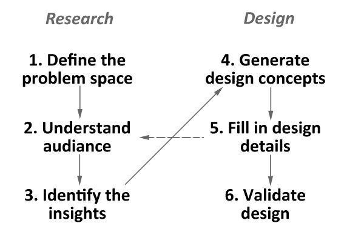
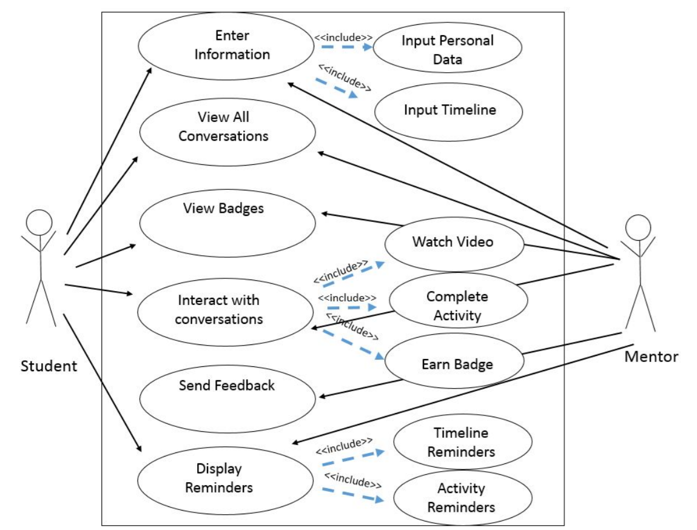

Blake Nemelka and his brother Bo wrote the book, “The Middle School Student’s Guide to Academic Success: 12 Conversations for College and Career Readiness,” based on 12 conversations they had with their father as middle schoolers. Blake asked our team to develop a companion application to complement the book, and he wanted us to explore what sort of features would be beneficial.
GOAL
We researched the motivations and needs of our audience, middle class middle schoolers and their parents, and found a need for digital versions of the book activities, reminders for performing college search tasks at appropriate times, and tools to help stay motivated. Based on these needs, we designed an app with distinct parent and student sections. Parents could recommend conversations to their child and give feedback on their work. Students could get badges to show their progress by completing each conversation. Both parent and student could access a shared calendar and get reminders for events. Finally, we validated our designs by having middle schoolers and their parents test out a prototype.
TEAM
Team size: 4
My role: UX Research, usability evaluation,UX design and development
Research
Knowing audience is a crucial part of the design. The following shows the research and analysis process used for this application design.
PROCESS
A kickoff meeting was held with client to determine vision for the application. We summarized the initial vision as "To design a fun and collaborative mobile app to accompany the book"

{kind=link}
PROBLEM STATEMENT
After much deliberation, our initial discussion and repeated readings of the book, we arrived the following problem statement
"Middle school students and their mentors in a home setting need a guide to help them complete the activities in the book, ‘The Middle School Student's Guide to Academic Success.’ This guide would help facilitate collaboration between parents and students and help prepare students for college by teaching them skills such as time-management, goal setting and being aware of importance of GPA for future college considerations"
DATA COLLECTION
We primarily had 4 sources for data collection accounting for primary research. We went through several relevant articles (arguably fun readings) for secondary research as well.
5 Email interviews involved understanding the audience who were geographically far (Utah). About 4 families (Mother, Father, and the child) took part in the study who were already familiar with the book. One family was given book and sufficient time to go through it. All the families responded to their respective questionnaires.
21 Student notes were collected from middle school students who went through the book in detail. This gave us an insight as to how the students viewed the books and what they liked or did not like in their own words, unprompted.
1 SME interviewinvolved discussion with a Subject Matter Expert who had years of experience mentoring middle and high school students. We learned that the book fit more naturally with the attitudes and needs of upper-middle class families.
16 Amazon reviews were analyzed, which involved either self-identified parents or recommended the book for use by parents. This provided the data to confirm our choice of audience.
AFFINITY DIAGRAMMING
Using affinity diagramming we listed the important themes that can influence our design decisions. In the design process, affinity diagramming can greatly aid in creating persons. We identified 8 major categories namely, The age group of the students and parent demography, Importance of GPA, Activities in the book, Conversation starter, Importance of goal setting, Importance of extracurricular activities, Reinforce collaboration, and Factor of motivation.
{kind=link}
Design
We had goal and vision in place. We had collected lot of data, however the challenge was to make sense of them. This kicked in our design process
PERSONA CREATION
We used all the data collected during our research to create primary and secondary personas

{kind=link}
{kind=link}
{kind=link}
USE-CASE MODEL
To visualize and define the behavior of the application, we created use-case model.

{kind=link}
{kind=link}
{kind=link}
{kind=link}
{kind=link}
Usability Evaluation
All the design processes mean nothing, if they are not subjected to continuous evaluation. During the design process, the application was subjected to multiple usability evaluations and the summary of results are posted as follows.
EVALUATION RESULTS
3 Middle school parents and students combination during paper prototype
4 Middle school students and 5 of their parents using mobile version of the prototype
Click here to download the Kirkpatrick Evaluation Model document
Click here to download the Test Script
Click here to download the Usability Evaluation document
Click here to download the Final Project Document
TAKEAWAY
This was really an amazing experience. This project further demonstrated the fact that, client assumptions can often be wrong. Initially the client assumed that application can suit each and every users and further, they also envisioned the application to be an iPad application. However, the research and analysis showed the application is only suitable for upper middle-class and above population. Also, mobile application was more suitable and preferred by the users.
TOOLS
Power Point, Paper-Pencil-SketchPen-Markers, Axure RP, PowerPoint, PopApp, CANVASIFY